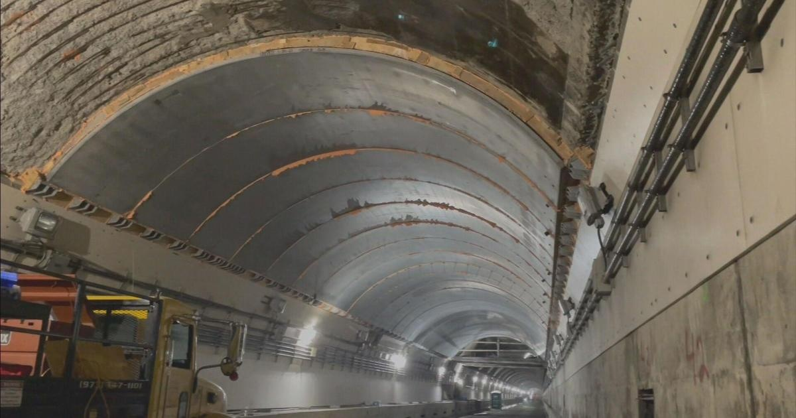

MassDOT says construction is on track, Sumner Tunnel set to reopen in 3 weeksBOSTON - is in its final weeks and as Labor Day Weekend approaches, neighbors are keeping their fingers crossed that the work will be finished on time. "I'd like to believe it, it kind of seems like everything is a slow process," said North End neighbor Brittany, who is hoping in just three weeks the tunnel will be open and traffic will ease. "It's definitely been worse than usual. There's more cars on the road, people are a little more aggressive." WBZ TV checked in with Massachusetts Department of Transportation (MassDOT) officials to find out if the Sumner Tunnel timeline is . "We're really happy with the progress," said MassDOT highway administrator Jonathan Gulliver. According to MassDOT, as of Wednesday, 62.8% of the project is complete. That includes the installation of 76% of the steel arch supports. "This year is about the ceiling," said Gulliver. It's phase one of the $160 million overhaul. Phase two, fixing the roadway itself, will happen next summer. Gulliver said fixing the tunnel ceiling first was critical. "The way the tunnel was constructed, it's a steel tube that was lined on the interior by about a foot of concrete. A lot of that concrete has started to become deteriorated," said Gulliver. Now new steel arch supports are permanently bound to the older tunnel, reinforcing the ceiling and preventing material from falling. Workers are also bringing the tunnel up to code with fireproof paneling. "That's our big milestone going into the end of this month," said Gulliver. A milestone that's taken hundreds of hands to complete. "When you look at how many people have touched this project, you're approaching probably 1,000 in total," said Gulliver, who's promising the project will be done on time. MassDOT is reminding drivers there will be about a dozen weekend closures after Aug. 31 as workers finalize phase one of the Sumner tunnel construction. for more features. |
 |